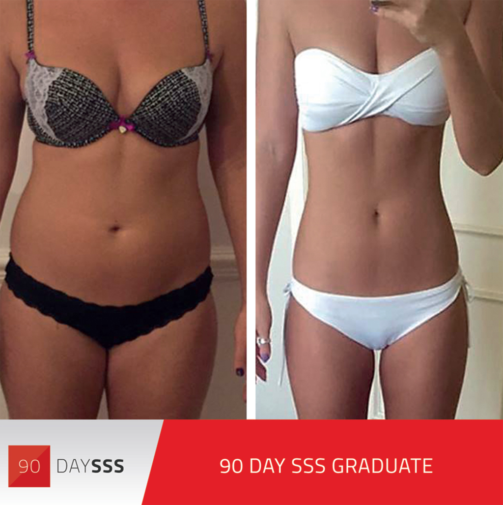

When I posted my first ever #Leanin15 video on Instagram in early 2014, I never imagined it would lead to me writing this book. It all started as a bit of fun in my kitchen, with the idea of sharing simple recipes to help people get lean.
All of the meals were ready in 15 minutes, and the videos were only 15 seconds long . . . hence the hashtag #Leanin15. To begin with, no one was watching my videos, and my neighbours thought I was mad. They often heard me singing or shouting, ‘Bosh, that’s Lean in 15’ and ‘Oooh, midget trees’ (that’s what I call broccoli, by the way!).
Some of my friends thought it was stupid, and said I should get back to doing personal training and running my boot camps – that’s what I had been happily doing for the past 5 years. But I was having fun, so I just carried on anyway, often posting up to 3 videos a day. It took a lot of time and energy to stop and film everything I cooked, but I saw every meal as an opportunity to share a new recipe, and this was my motivation to keep going.
To my surprise, within a few months, hundreds of thousands of people all over the world were following along, making my recipes at home and sharing them online. I think the speed and simplicity of my meals, along with the fact that I was clearly enjoying myself, inspired so many people to get involved.
I’m completely self-taught when it comes to cooking, so I never over-complicate things. I use foods that anyone can find in their local supermarket and this makes Lean in 15 accessible to everyone and perfect for busy people.
My approach is also about making small lifestyle changes rather than following a strict regime. I often post photos of myself eating out in restaurants and enjoying treats. I do love a chocolate fondant – guilty as charged!
I think people respond well to me, because I don’t eat perfectly all the time, and I never pretend that I do. In fact, my diet used to be pretty shocking. I’ve always trained hard, but I didn’t really take my nutrition seriously. Like most busy people, I was lazy when it came to cooking and used lack of time as an excuse. I often ate cereal, sandwiches on the go and ready meals. This left me feeling tired, but I just accepted it as normal. I drank fizzy drinks and snacked on chocolate bars in between personal training clients. During this time, my body didn’t change much and I could never get lean. Eventually, I discovered that no matter how hard I trained, I couldn’t out-train a poor diet.
It was only when I really started to study nutrition after university that I realized just how important real food was for my energy levels and making changes in my body. The more I understood, the more I started to transform my own body. With this new knowledge and understanding of nutrition, I was able to get lean and stay lean. I then started to apply my knowledge with my clients, and it was remarkable how quickly their bodies would respond. Helping clients get fast transformations meant I soon got fully booked as a personal trainer. But, even with two busy boot camps, I could only ever work with about 100 people each week. This wasn’t enough for me. I wanted to help more people reach their goals, so I started putting more energy into my social media. With Twitter, Facebook, YouTube and Instagram, I was able to reach thousands of people at once by sharing content online – video recipes, workouts and blogs. As my social media following grew, I started to realize just how shocking the diet industry really was. Every day I would receive messages from people on all sorts of depressing low-calorie crash diets, and it soon became apparent just how much wrong information people were being given – and how far they were willing to go to lose weight. Regimes of training for 2 hours a day and eating fewer than 1000 kcal were way too common, and it upset me that people were living this way, always trying to find a shortcut and never getting the results they wanted. Very unhappy people were being held prisoner to diets that would never give them the lean body they wanted. I believe such crash diets are a contributory factor to so many of the eating disorders and body image issues we face today. People have become convinced that the only way to lose body fat is to drastically cut calories to create a huge energy deficit – but this only leads to yo-yo dieting and people battling their weight for years, which is not a healthy way to live, and it shouldn’t be accepted as the norm.
One day while I was out jogging, I decided I would do something about it. I would create an online nutrition and training plan to educate people properly and rescue them from these damaging, unhealthy diets. My aim was to create a sustainable plan with tasty meals that would get people eating more food, training more effectively (and for much less time!) and burning fat.
Everyone has different energy demands. My meal plans are unique; I create tailored meal plans that allow choice and flexibility, to ensure people get results and keep them. After months of planning, the 90 Day Shift, Shape and Sustain plan was born. I used social media to promote it, and started to post ‘before’ and ‘after’ transformation pictures, along with written testimonials. I had no idea what I had created at the time – and, to this day, I can’t quite believe the success it’s had. But by creating an online community, I unknowingly connected thousands of people who were all on the same journey. As more and more clients signed up online, I had to step away from my boot camps, and eventually I passed on all my personal training clients to a friend. My business was now fully online and going global.

Originally it was mainly people from the UK signing up, but then people all over the world started to get on board. Places as far away as Australia, Sweden, Singapore and Dubai were starting to hear about Lean in 15 and signing up to my 90 Day Shift, Shape and Sustain plan. It started off with just me answering a few emails and sending a few plans out each week, but before I knew it I had thousands of people signing up each month and a team of support staff to help coach clients on their journey.
I absolutely love what I do now, and although I never get to actually meet any of my clients, I’m really proud of all of them and feel inspired by them every day. By educating people on nutrition I have been able to empower them to take control and achieve their goals in a healthy and enjoyable way.
As The Body Coach, I am now on a mission to help even more people. It’s important to note that my online business didn’t just happen overnight – it grew organically and came from nothing but hard work. It takes a lot of trust for a person to buy into something without ever meeting you, and I built that trust up over hundreds of hours of interaction, videos and tweets. When no one was listening, I kept sharing and giving, and eventually people started to hear me.
So that’s a little bit about me and my story up to now. I’m very excited to be sharing my knowledge and recipes with you. I hope you enjoy the book and get inspired to cook, prep like a boss and get the body you’ve always wanted.
- THE BODY COACH